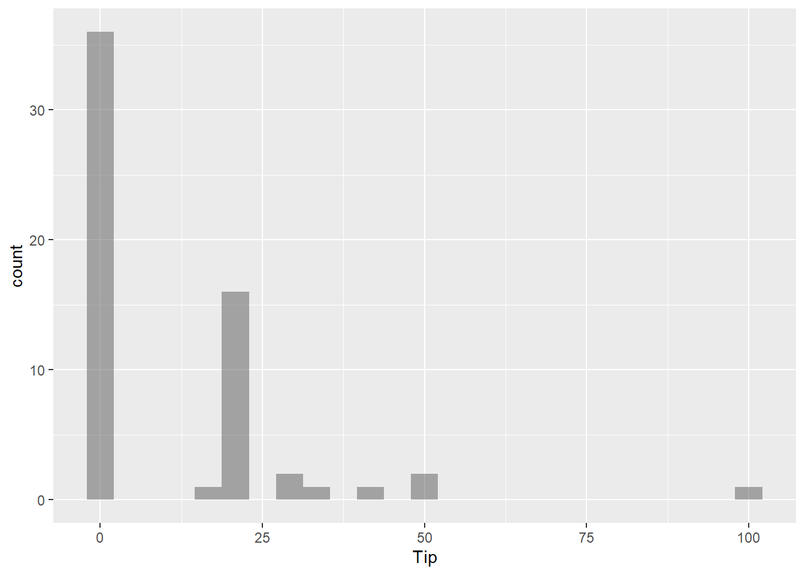
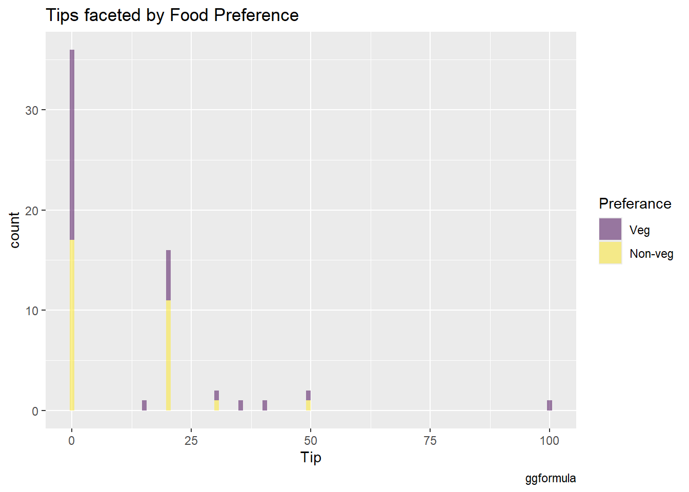
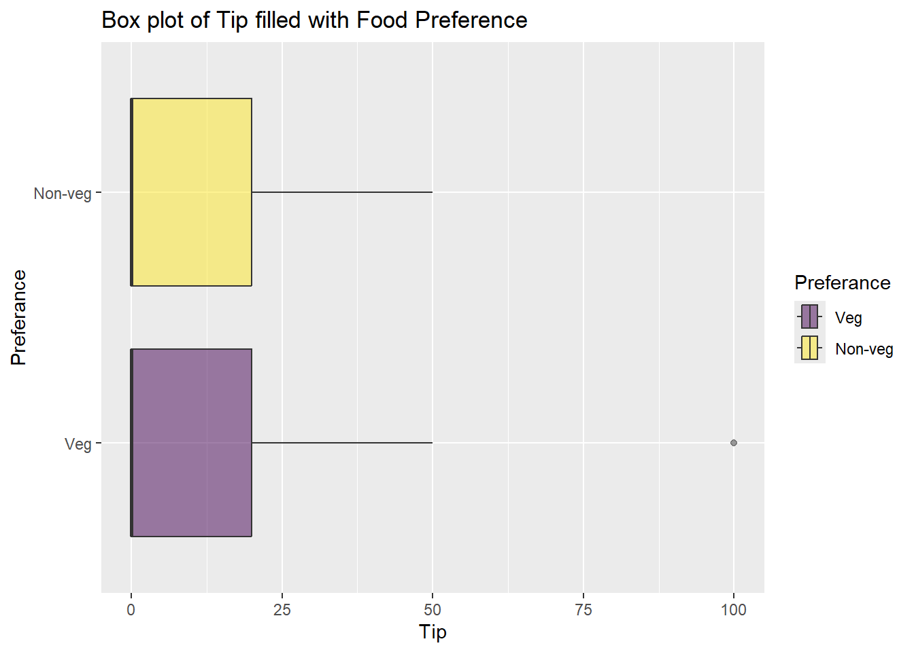
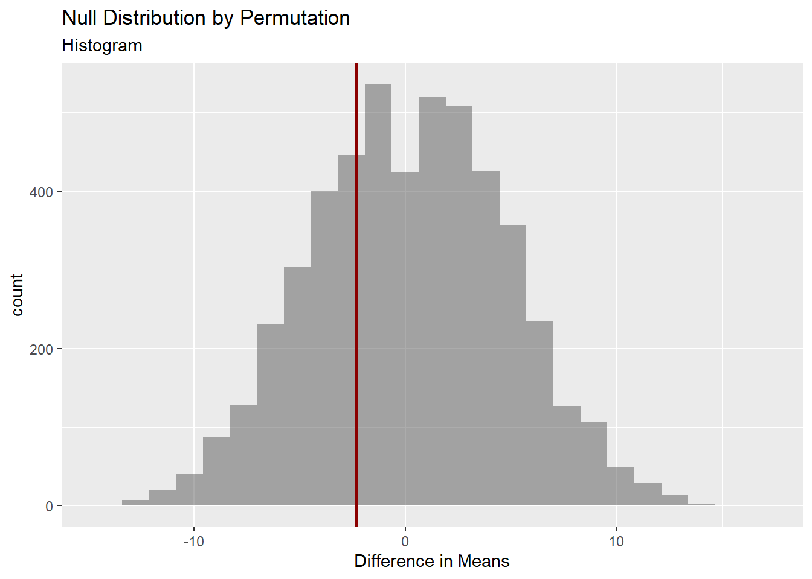
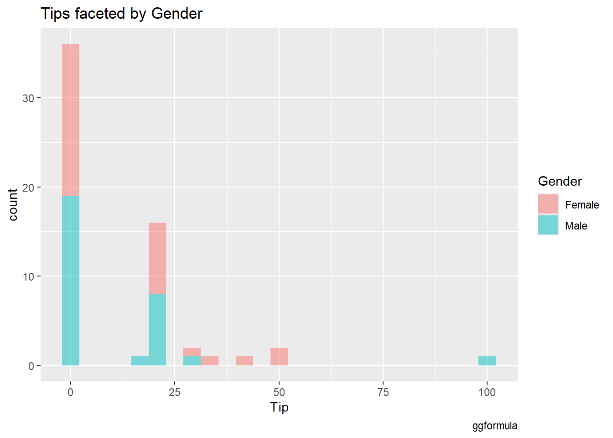
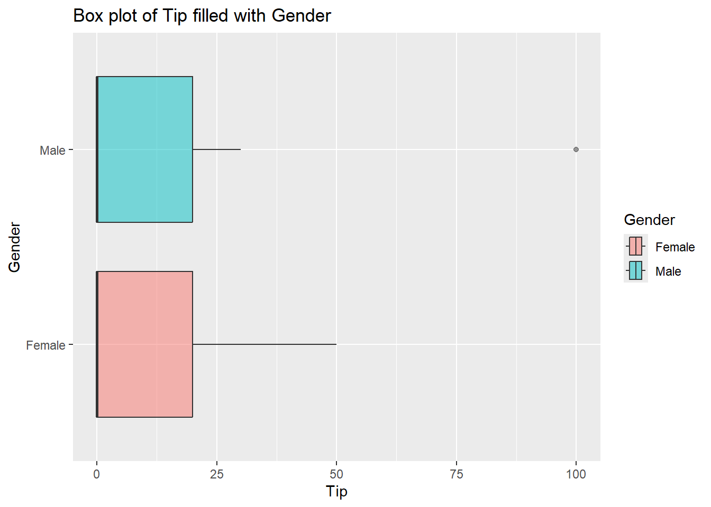
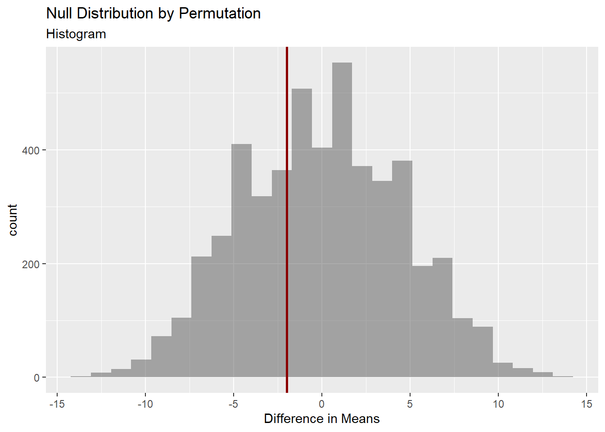

── Attaching core tidyverse packages ──────────────────────── tidyverse 2.0.0 ──
✔ dplyr 1.1.4 ✔ readr 2.1.5
✔ forcats 1.0.0 ✔ stringr 1.5.1
✔ ggplot2 3.5.1 ✔ tibble 3.2.1
✔ lubridate 1.9.3 ✔ tidyr 1.3.1
✔ purrr 1.0.2
── Conflicts ────────────────────────────────────────── tidyverse_conflicts() ──
✖ dplyr::filter() masks stats::filter()
✖ dplyr::lag() masks stats::lag()
ℹ Use the conflicted package (<http://conflicted.r-lib.org/>) to force all conflicts to become errors
library(mosaic)
Registered S3 method overwritten by 'mosaic':
method from
fortify.SpatialPolygonsDataFrame ggplot2
The 'mosaic' package masks several functions from core packages in order to add
additional features. The original behavior of these functions should not be affected by this.
Attaching package: 'mosaic'
The following object is masked from 'package:Matrix':
mean
The following objects are masked from 'package:dplyr':
count, do, tally
The following object is masked from 'package:purrr':
cross
The following object is masked from 'package:ggplot2':
stat
The following objects are masked from 'package:stats':
binom.test, cor, cor.test, cov, fivenum, IQR, median, prop.test,
quantile, sd, t.test, var
The following objects are masked from 'package:base':
max, mean, min, prod, range, sample, sum
library(skimr)
Attaching package: 'skimr'
The following object is masked from 'package:mosaic':
n_missing
library(ggformula)library(crosstable)
Attaching package: 'crosstable'
The following object is masked from 'package:purrr':
compact
Defining the Research Experiment:
Goal of the Experiment: To determine if there is a significant difference in the amount of money given as tip among vegetarian and non-vegetarian young adults.
Methodology
Sampling: The population consists of students on a college campus who have ordered food through online delivery services like Swiggy or Zomato recently. The method of online platforms must have been chosen since it is easy to access and recollect the amount paid as tip this way and tipping in restaurants is not too socially expected in India unlike in the West. The sample population is a randomly chosen group of students from Manipal Academy of Higher Education, Bangalore, ensuring a hopefully balanced set of participants that is a true representation of the population.
Method Followed- To ensure a lack of bias, a coin was tossed to even determine if data would be collected from a person or not. This lead to random sampling ensure diversity in age, year of study, and socioeconomic background.
Sample Size: We have a total of 60 participants 30 vegetarians and 30 non-vegetarians.
Why could knowing this be useful?
It can provide insights for businesses like restaurants or food delivery services in understanding the financial behaviors of specific demographic segments.
Understanding these patterns can help employers design compensation and customer engagement strategies that ensure fair tipping opportunities for their staff.
There are 30 vegetarian and 30 non-vegetarian entries in the Food Preference factor. There are 30 male and 30 female entries in the Gender factor.Was data collected in a way that there are 15 male and 15 female vegetarians and 15 male and 15 female non-vegetarians? I should summerise and check!
It’s interesting to see that the progression of p0 to p100 is a series of 0, 0, 0, 20 and 100. The smallest tip given is 0 while the biggest is 100. This also indicates a large number of 0 -no tip in the data set compared to other values. It’s most likely a very right skewed distribution. It would be interesting to analyse who contributed to more of these 0s or if everyone is equally kanjoos regardless of food preference or gender.
Summeries and Visualizations of the data
Distribution of overall tips:
tips_modified %>%gf_histogram(~Tip)

Observations:
Like i had thought inspecting the day, a majority of participants have not given any tip. It as a right skewed distribution.
Among people who do tip, 20rs is the most tipped value of money.
Observation: My previous hypothesis that there are 15 male and 15 female vegetarians and 15 male and 15 female non-vegetarians. This must have been done to remove any gender bias from our analysis.
It gives us the opportunity to also inspect another aspect to tipping - if gender plays a roll or not- it works either ways- on doing it in this way, our analysis has no bias based on dietary decisions. For now, let’s continue with the Food preference tipping analysis.
Tips faceted by Food Preference:
gf_histogram(~Tip, fill =~Preferance, data = tips_modified, bins=100) %>%gf_labs(title ="Tips faceted by Food Preference", caption ="ggformula")

tips_modified %>%gf_histogram(~Tip|Preferance, fill =~Preferance, color ="black", alpha =0.3) %>%gf_labs(title ="Tips faceted by Food Preference",caption ="ggformula" ) %>%gf_theme(theme(axis.text.x =element_text(angle =45,hjust =1 ) ))
Both groups show a right-skewed distribution with a high count of low tip (0) amount. The count of participants giving no tip appears to be similar for both groups.
These graphs suggest that while the count of tips (below 25) appears to be higher for non-vegetarians, The count of higher tips (above 25), while low for both groups, is relatively higher for vegetarians.
Maybe food preference might not have a strong influence on the tip amounts given by students? Or maybe Vegetarians tip more than non vegetarians in the sense that when they vegetarians do give tips, they tend to give a higher amounts than non- vegetarians do?
Crosstables:
Trying to find the difference in means and medians of tips given based on the difference in food preference within the sample population to get a better understanding of what the data is saying:
crosstable(Tip ~ Preferance, data = tips_modified) %>% crosstable::as_flextable()
label
variable
Preferance
Veg
Non-veg
Tip
Min / Max
0 / 100.0
0 / 50.0
Med [IQR]
0 [0;20.0]
0 [0;20.0]
Mean (std)
12.3 (21.9)
10.0 (12.9)
N (NA)
30 (0)
30 (0)
Visualizing the Median and IQR ranges:
tips_modified %>%gf_boxplot(Preferance ~ Tip, fill =~Preferance, alpha=0.5) %>%gf_labs(title ="Box plot of Tip filled with Food Preference")

Observations:
The mean value of the tips given by vegetarians(12.3) is higher than that given by non- vegetarians(10) which makes sense considering our earlier observation of the fact that the giving of higher tips is more common among vegetarians.
The higher standard deviation in the Vegetarian group-21.9 suggests that they have more variability in tipping behavior compared to Non-vegetarians-12.9.
The median tip for both groups is 0, indicating that at least half of the participants from both groups tipped nothing.
The IQR range for both groups is 0 to 20 i.e. 50% of the tips for both groups falls within this range.
Does this suggest that most participants, regardless of food preference, tend to give low tips, with the Vegetarian group having one visible outlier that skews its range higher- there is no difference in tipping behavior based on food preference?
Forming my Hypothesis:
Null Hypothesis: There is no difference in the average tip amount between vegetarians and non-vegetarians.
Alternative Hypothesis: Vegetarians tend give larger values as tips than non-vegetarians.
It’s not possible to come to any concrete conclusion with just the descriptive analysis of the data, and so, I move to conduct statistical analysis on this data.
Statistical Analysis: Hypothesis Testing
A t-test:
Assumptions: 1. The distribution for each group - Vegetarians and Non-vegetarians is normal.
mosaic::t_test(Tip ~ Preferance, data = tips_modified)%>% broom::tidy()
The estimate suggests that vegetarians, on average, give 2.3rs more tip than non-vegetarians in mu sample data set.
The high p-value of 0.6 1, greater than the typical significance level of 0.05, suggests that there is no statistically significant difference in the average tip amounts between vegetarians and non-vegetarians.The result could just be random, so I don’t have strong evidence that something is happening.
0- which indicates that there is no difference on the average tip, falls within the confidence intervals which suggest the same.
Therefore we cannot reject the null hypothesis.
What if my assumption of these 2 distribution of tip faceted by Food Preference being normal is not right? We could do a Shapiro test to confirm.
A Shapiro test:
Shapiro test is one used to determine if a sample comes from a normally distributed population or not.
First we transform our data set to be 2 different ones- one with all the Veg values and the other with all the Non-veg values.
These graphs don’t seem to suggest that these 2 distributions are normally distributed. Does the shapiro test say the same?
For Vegetarians:
Null hypothesis: The money given as tip by Vegetarians is normally distributed.
shapiro.test(filtered_Veg$Tip)%>% broom::tidy()
# A tibble: 1 × 3
statistic p.value method
<dbl> <dbl> <chr>
1 0.629 0.000000166 Shapiro-Wilk normality test
A high w (statistic) value - one greater than 0.9 indicates that a distribution is normal. With a w value so low : 0.62, we can reject the null hypothesis that it is normally distributed. The p-value suggests the same- it’s less than 0.05 which confirms that the w value we received is statistically significant, it did hot happen by chance.
Therefore, the distribution of tips given by vegetarians are not normally distributed.
For Non-Vegetarians:
Null hypothesis: The money given as tip by Non-Vegetarians is normally distributed.
shapiro.test(filtered_Non$Tip)%>% broom::tidy()
# A tibble: 1 × 3
statistic p.value method
<dbl> <dbl> <chr>
1 0.717 0.00000275 Shapiro-Wilk normality test
The conclusions of this Shapiro test is similar to the last- a low w which indicates that the distribution is not normally distributed. Though a little more than the the previous one. We confirm this by assessing the p-value of the test: a very low value confirming that this was not by chance.
Therefore, the distribution of tips given by Non-vegetarians are not normally distributed.
And so we through out any inferences we pulled from the t test- our assumption has been proven to be false- making it invalid.
Mann-Whitney Test
The Mann-Whitney Test is used to compare two independent groups when the data doesn’t follow a normal distribution.
Okay i have a doubt- The test does not directly indicate which group (variable) has higher values. If i look at my skim or even my estimate1 in t-test, Veg is the first group, I also ordered my levels to be Veg first, so that’s how it works here too? Yep, that’s what I’m going with.
The estimate mean difference is 3.7rs.
The p-value is 0.8 (greater than 0.05) suggesting that the estimate result could easily /probably happened by chance, so it’s not considered significant. We therefore, cannot reject the null hypothesis.
0- which indicates that there is no difference on the average tip, falls within the confidence intervals which suggests the same- we cannot reject the null hypothesis.
I received an error saying “Warning: cannot compute exact p-value with ties Warning: cannot compute exact confidence intervals with ties”. This means that because i have so may repeating values (I’m guessing mainly 0)- there are many values with the same rank and polarity. This could lead to not having a precise p-values and confidence interval result. Therefore, i cannot reject or accept the null hypothesis right away, to make sure, i will go ahead and perform a permutation test to come to a solid inference, one that i cannot question.
Permutation Test
The permutation test is very flexible and requires minimal assumptions. It doesn’t assume normality or equal variances, making it useful for small or skewed data.
obs_diff_pref <-diffmean(Tip ~ Preferance, data = tips_modified) obs_diff_pref
diffmean
-2.333333
Non-veg mean - Veg mean = -2.3
In my sample data, vegetarians, on average, give 2.3rs more tip than non-vegetarians.
Creating the Null Distribution by Permutation
null_dist_tips <-do(4999) *diffmean(data = tips_modified, Tip ~shuffle(Preferance))##null_dist_tips , it appears too long when i render it!
Visualizing this:
gf_histogram(data = null_dist_tips, ~ diffmean, bins =25) %>%gf_vline(xintercept = obs_diff_pref, colour ="darkred", linewidth =1,title ="Null Distribution by Permutation", subtitle ="Histogram") %>%gf_labs(x ="Difference in Means")

Acquiring the p-value:
The p-value is calculated by comparing the obs_diff_pref (from the actual data) to the null distribution acquired through permutation. It represents the proportion of times a difference as extreme as the observed one occurs by random chance alone.
prop1(~ diffmean <= obs_diff_pref, data = null_dist_tips)
prop_TRUE
0.311
Observations:
The p-value observed through the permutation test is 0.32. If it would have been a value less than 0.05, it would indicate that that the observed difference is unlikely to have occurred by chance, leading to a rejection of the null hypothesis. But in case of a higher value like 0.3, we cannot reject the null hypothesis: There is no difference in the tipping behavior between vegetarians and non-vegetarians.
The visualization of the histogram of mean differences- null distribution along with the observed mean different suggests the same. The observed mean difference is seen around the middle of our null distribution - I can easily mimic nature here - Nothing special is happening - I cannot reject the null hypothesis.
Conclusion:
In the assumption that my sample population is a true representation of my population- there appears to be no significant difference in tipping behavior based on dietary preference.
Descriptive Analysis (based on gender):
Visualizing Tips faceted by Gender
gf_histogram(~Tip, fill =~Gender, data = tips_modified) %>%gf_labs(title ="Tips faceted by Gender", caption ="ggformula")

tips_modified %>%gf_histogram(~Tip|Gender, fill =~Gender, color ="black", alpha =0.3) %>%gf_labs(title ="Tips faceted by Gender",caption ="ggformula" ) %>%gf_theme(theme(axis.text.x =element_text(angle =45,hjust =1 ) ))
If I ignore the outlier for males at 100, from looking the data, i think females tend to tip more than males.
Crosstables:
Does the summation of the data support my hunch?
crosstable(Tip ~ Gender, data = tips_modified) %>% crosstable::as_flextable()
label
variable
Gender
Female
Male
Tip
Min / Max
0 / 50.0
0 / 100.0
Med [IQR]
0 [0;20.0]
0 [0;20.0]
Mean (std)
12.2 (16.1)
10.2 (19.7)
N (NA)
30 (0)
30 (0)
Visualization of median and IQR ranges:
tips_modified %>%gf_boxplot(Gender ~ Tip, fill =~Gender, alpha=0.5) %>%gf_labs(title ="Box plot of Tip filled with Gender")

Observations:
50 percent of all tips for both genders lie within the same range 0-20.
Despite this similarity, the difference in mean by 2 values (which i accept and notice is not too much), the higher value being present for Females, suggest that there are females are more likely to pay more tip than men.
Forming My Hypothesis:
Null Hypothesis: There is no difference in tipping behavior between males and females.
Alternative Hypothesis: Females tend give larger values as tips than Males.
Statistical Analysis: Hypothesis Testing
A t-test:
Assumptions: 1. The distribution for each group - male and female is normal.
mosaic::t_test(Tip ~ Gender, data = tips_modified)%>% broom::tidy()
The estimate suggests that females, on average, give 2rs more tip than males in our sample data set.
The high p-value of 0.66, greater than the typical significance level of 0.05, suggests that there is no statistically significant difference in the average tip amounts between males and females.The result could just be random, so I don’t have strong evidence that something is happening.
0- which indicates that there is no difference on the average tip, falls within the confidence interval (-7.2 to 11.9) which suggest the same.
Therefore we cannot reject the null hypothesis.
But what if my assumption of the tips being distributed normally is not accurate?
First we transform our data set to be 2 different ones- one with all the Male values and the other with all the Female values.
Name Gender Preferance Tip
1 Adit Male Veg 0
2 Akash Male Non-veg 0
3 Ankit Male Non-veg 0
4 Anmol Male Veg 0
5 Anna Male Veg 0
6 Arnav Male Non-veg 0
7 Ashutosh Male Non-veg 0
8 Ayan Male Veg 0
9 Debu Male Veg 15
10 Dheeman Male Veg 100
11 Hardik Male Non-veg 0
12 Ignatius Male Non-veg 20
13 Mahendra Male Non-veg 20
14 Manish Male Veg 0
15 Nevaan Male Non-veg 0
16 Nishant Male Non-veg 20
17 Ojas Male Veg 20
18 Priyanshu Male Non-veg 20
19 Rikin Male Non-veg 30
20 Shashwat Male Veg 0
21 Shiva Male Veg 0
22 Sourabh Male Non-veg 0
23 Srujan Male Veg 0
24 Suhaas Male Veg 20
25 Taran Male Veg 20
26 Varad Male Veg 0
27 Vedant Male Non-veg 20
28 Vinay Male Non-veg 0
29 Vishesh Male Veg 0
30 Vishnu Male Non-veg 0
The data does not seem to be normally distributed. Let’s confirm!
A Shapiro test:
Shapiro test is one used to determine if a sample comes from a normally distributed population or not.
For Males:
Null hypothesis: The money given as tip by Males is normally distributed.
shapiro.test(filtered_Male$Tip)%>% broom::tidy()
# A tibble: 1 × 3
statistic p.value method
<dbl> <dbl> <chr>
1 0.532 0.0000000119 Shapiro-Wilk normality test
With a w value so low : 0.5 (<0.9), we can reject the null hypothesis that it is normally distributed. The p-value suggests the same- it’s less than 0.05 which confirms that the w value we received is statistically significant, it did not happen by chance.
Tips given by males are not normally distributed.
For Females:
Null hypothesis: The money given as tip by Females is normally distributed.
# A tibble: 1 × 3
statistic p.value method
<dbl> <dbl> <chr>
1 0.748 0.00000832 Shapiro-Wilk normality test
With a w value so low : 0.7 (<0.9), we can reject the null hypothesis that it is normally distributed. The p-value suggests the same- it’s less than 0.05 which confirms that the w value we received is statistically significant, it did not happen by chance.
Tips given by females are not normally distributed.
Mann-Whitney Test
Since we proved the t-test p-value to be invalid, we can use the Mann-Whitney test to pull inferences. It is used to compare two independent groups when the data doesn’t follow a normal distribution.
The estimate suggests that females, on average, give 4.446004e-05rs more tip than males.
The p-value is 0.4(greater than 0.05) suggesting that the estimate result could easily /probably happened by chance, so it’s not considered significant. We therefore, cannot reject the null hypothesis.
0- which indicates that there is no difference on the average tip, falls within the confidence intervals which suggests the same- we cannot reject the null hypothesis.
I received an error saying “Warning: cannot compute exact p-value with tiesWarning: cannot compute exact confidence intervals with ties”. This means that because i have so may repeating values (I’m guessing mainly 0)- there are many values with the same rank and polarity. This could lead to not having a precise p-values and confidence interval result. Therefore, i cannot reject or accept the null hypothesis right away, to make sure, i will go ahead and perform a permutation test to come to a solid inference, one that i cannot question.
Permutation Test
The permutation test is very flexible and requires minimal assumptions. It doesn’t assume normality or equal variances, making it useful for small or skewed data.
obs_diff_gender <-diffmean(Tip ~ Gender, data = tips_modified) obs_diff_gender
diffmean
-2
Male mean - Female mean = -2
In my sample data, females, on average, give 2rs more tip than males.
Creating the Null Distribution by Permutation
null_dist_tips2 <-do(4999) *diffmean(data = tips_modified, Tip ~shuffle(Gender))##null_dist_tips2 , it appears too long when i render it!
Visualizing this:
gf_histogram(data = null_dist_tips2, ~ diffmean, bins =25) %>%gf_vline(xintercept = obs_diff_gender, colour ="darkred", linewidth =1,title ="Null Distribution by Permutation", subtitle ="Histogram") %>%gf_labs(x ="Difference in Means")

Acquiring the p-value:
The p-value is calculated by comparing the obs_diff_gender (from the actual data) to the null distribution acquired through permutation. It represents the proportion of times a difference as extreme as the observed one occurs by random chance alone.
prop1(~ diffmean <= obs_diff_gender, data = null_dist_tips2)
prop_TRUE
0.3574
Observations:
The p-value observed through the permutation test is 0.35. If it would have been a value less than 0.05, it would indicate that that the observed difference is unlikely to have occurred by chance, leading to a rejection of the null hypothesis. But in case of a higher value like 0.3, we cannot reject the null hypothesis: There is no difference in the tipping behavior between male and female students .
The visualization of the histogram of mean differences- null distribution along with the observed mean different suggests the same. The observed mean difference is observed around the middle of our null distribution - I can easily mimic nature here - Nothing special is happening - I cannot reject the null hypothesis.
Conclusion:
In the assumption that my sample population is a true representation of my population-there appears to be no significant difference in tipping behavior based on gender.